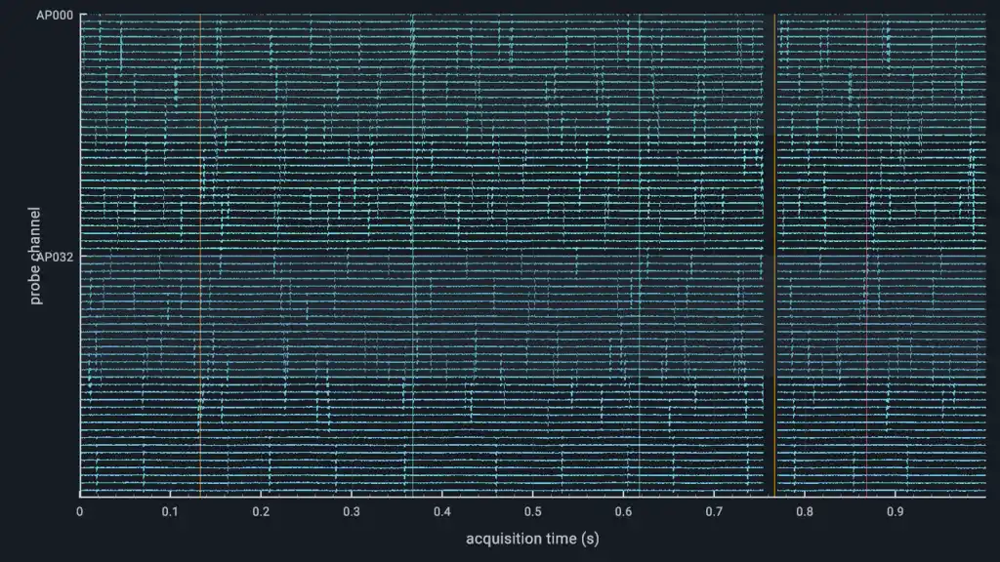

Streaming DAQ · 64 channels¶
This example renders a simulated real-time data acquisition system.
Preview¶

Run And Adapt¶
Commands below assume a Datoviz source checkout and start at the repository root. Use your configured build environment; Python routes additionally require local bindings.
| Route | Availability | Command or action |
|---|---|---|
| C | Canonical native source | just example-c showcases/streaming_daq (build and run), or rerun ./build/examples/c/showcases/streaming_daq |
| Python | Available | python3 -m examples.python.gallery.showcases.streaming_daq |
| Browser | Live WebGPU route | Open live example |
Use this example as capability or integration evidence, not as a minimal copy-paste template. Start from the nearest supported, copy-safe example and add this feature after verifying the linked API reference.
What To Look For¶
64 continuous extracellular traces combine correlated background activity, spatially coherent unit spikes, and occasional population events in one persistent raw line-list visual. A wall-clock producer thread emits fixed acquisition blocks into a bounded queue, while the render thread updates only the newly written circular-buffer vertex range. Sparse event markers and a live GUI expose acquisition timing, signal controls, and queue statistics. The sweep cursor interpolates the producer's monotonic hardware clock independently of render FPS.
Control: --live opens a left-docked GUI; space pauses; R resets acquisition; F resets panzoom
Source¶
#!/usr/bin/env python3
"""Live 64-channel synthetic data-acquisition sweep."""
from __future__ import annotations
import numpy as np
import datoviz as dvz
from examples.python.gallery import common as ex
CHANNEL_COUNT = 64
SAMPLE_COUNT = 512
DURATION = 4.0
def _trace_geometry(elapsed: float):
x = np.linspace(0.0, DURATION, SAMPLE_COUNT, dtype=np.float32)
channel = np.arange(CHANNEL_COUNT, dtype=np.float32)[:, None]
phase = 0.17 * channel + 2.0 * np.pi * (x[None, :] / DURATION + 0.18 * elapsed)
carrier = 0.12 * np.sin(phase * (1.0 + 0.013 * channel))
correlated = 0.06 * np.sin(3.2 * phase + 0.6 * np.sin(0.45 * elapsed))
spike_center = np.mod(0.73 * elapsed + 0.031 * channel, DURATION)
distance = np.minimum(np.abs(x[None, :] - spike_center), DURATION - np.abs(x[None, :] - spike_center))
spikes = (0.34 + 0.10 * np.sin(0.21 * channel)) * np.exp(-(distance / 0.022) ** 2)
signal = carrier + correlated + spikes
rows = CHANNEL_COUNT - 1 - channel + 0.5
y = rows + 0.58 * signal
starts = np.stack((np.broadcast_to(x[:-1], (CHANNEL_COUNT, SAMPLE_COUNT - 1)), y[:, :-1]), axis=-1)
ends = np.stack((np.broadcast_to(x[1:], (CHANNEL_COUNT, SAMPLE_COUNT - 1)), y[:, 1:]), axis=-1)
positions = np.zeros((CHANNEL_COUNT, SAMPLE_COUNT - 1, 2, 3), dtype=np.float32)
positions[..., 0, :2] = starts
positions[..., 1, :2] = ends
return positions.reshape(-1, 3)
def _trace_colors():
palette = np.array([[94, 213, 220, 218], [88, 193, 222, 212]], dtype=np.uint8)
per_channel = palette[(np.arange(CHANNEL_COUNT) // 32) % len(palette)]
return np.repeat(per_channel, 2 * (SAMPLE_COUNT - 1), axis=0)
def _line_visual(scene, panel, positions, colors):
visual = dvz.dvz_primitive(scene, dvz.DVZ_PRIMITIVE_TOPOLOGY_LINE_LIST, 0)
if not visual:
raise RuntimeError("dvz_primitive() failed")
if dvz.dvz_visual_set_data_many(visual, {"position": positions, "color": colors}) != 0:
raise RuntimeError("line upload failed")
dvz.dvz_visual_set_alpha_mode(visual, dvz.DVZ_ALPHA_BLENDED)
dvz.dvz_visual_set_depth_test(visual, False)
ex.add_visual(panel, visual)
return visual
def _build_scene():
scene, figure, panel = ex.scene_panel()
dvz.dvz_panel_set_background_color(panel, dvz.DvzColor(17, 22, 29, 255))
dvz.dvz_panel_set_domain(panel, dvz.DVZ_DIM_X, 0.0, DURATION)
dvz.dvz_panel_set_domain(panel, dvz.DVZ_DIM_Y, -0.5, CHANNEL_COUNT - 0.5)
traces = _line_visual(scene, panel, _trace_geometry(0.0), _trace_colors())
event_x = np.array([0.42, 1.18, 2.05, 2.83, 3.61], dtype=np.float32)
events = np.zeros((len(event_x), 2, 3), dtype=np.float32)
events[:, :, 0] = event_x[:, None]
events[:, 0, 1], events[:, 1, 1] = -0.5, CHANNEL_COUNT - 0.5
event_colors = np.repeat(np.array([[255, 179, 71, 105]], np.uint8), 2 * len(event_x), axis=0)
_line_visual(scene, panel, events.reshape(-1, 3), event_colors)
cursor_positions = np.array([[0.0, -0.5, 0.0], [0.0, CHANNEL_COUNT - 0.5, 0.0]], np.float32)
cursor = _line_visual(scene, panel, cursor_positions, np.repeat(np.array([[250, 183, 3, 255]], np.uint8), 2, axis=0))
x_axis = dvz.dvz_panel_axis(panel, dvz.DVZ_DIM_X)
y_axis = dvz.dvz_panel_axis(panel, dvz.DVZ_DIM_Y)
dvz.dvz_axis_set_grid(x_axis, True)
dvz.dvz_axis_set_label(x_axis, b"sweep time (s)")
dvz.dvz_axis_set_label(y_axis, b"channel")
return scene, figure, traces, cursor
def main() -> None:
scene, figure, traces, cursor = _build_scene()
def on_frame(_view, _frame_index: int, elapsed: float) -> None:
if dvz.dvz_visual_set_data(traces, "position", _trace_geometry(elapsed)) != 0:
raise RuntimeError("trace update failed")
x = np.float32(elapsed % DURATION)
positions = np.array([[x, -0.5, 0.0], [x, CHANNEL_COUNT - 0.5, 0.0]], np.float32)
if dvz.dvz_visual_set_data(cursor, "position", positions) != 0:
raise RuntimeError("cursor update failed")
ex.run_with_frame_callback(scene, figure, "Streaming DAQ - 64 channels", on_frame)
if __name__ == "__main__":
main()
/*
* Copyright (c) 2021 Cyrille Rossant and contributors. All rights reserved.
* Licensed under the MIT license. See LICENSE file in the project root for details.
* SPDX-License-Identifier: MIT
*/
/* streaming_daq - This example renders a simulated real-time data acquisition system.
*
* What to look for: 64 continuous extracellular traces combine correlated background activity,
* spatially coherent unit spikes, and occasional population events in one persistent raw line-list
* visual. A wall-clock producer thread emits fixed acquisition blocks into a bounded queue, while
* the render thread updates only the newly written circular-buffer vertex range. Sparse event
* markers and a live GUI expose acquisition timing, signal controls, and queue statistics. The
* sweep cursor interpolates the producer's monotonic hardware clock independently of render FPS.
*
* Scenario: showcases_streaming_daq
* Style: showcase, graphite_cyan, 1280x720 window target
*
* Build: just example-c showcases/streaming_daq
* Run: ./build/examples/c/showcases/streaming_daq --live
* Smoke: ./build/examples/c/showcases/streaming_daq --png
* Video: ./build/examples/c/showcases/streaming_daq --offscreen-record 180
* Control: --live opens a left-docked GUI; space pauses; R resets acquisition; F resets panzoom
*/
/*************************************************************************************************/
/* Includes */
/*************************************************************************************************/
#include <inttypes.h>
#include <math.h>
#include <stdbool.h>
#include <stdint.h>
#include "_alloc.h"
#include "_assertions.h"
#include "_compat.h"
#include "datoviz/controller/panzoom.h"
#include "datoviz/gui.h"
#include "datoviz/input.h"
#include "datoviz/scene.h"
#include "example_common.h"
#include "example_style.h"
#include "example_tuner.h"
#include "runner/scenario_runner.h"
#include "streaming_daq_model.h"
/*************************************************************************************************/
/* Constants */
/*************************************************************************************************/
#define WIDTH EXAMPLE_WINDOW_WIDTH
#define HEIGHT EXAMPLE_WINDOW_HEIGHT
#define TRACE_VERTICES_PER_INTERVAL 2u
#define CHANNEL_BANK_SIZE 16u
#define EVENT_MARKER_CAPACITY 16u
/*************************************************************************************************/
/* Structs */
/*************************************************************************************************/
typedef struct StreamingDaqState
{
DaqModel model;
ExampleTuner tuner;
DvzPanel* panel;
DvzPanzoom* panzoom;
DvzAxis* x_axis;
DvzAxis* y_axis;
DvzVisual* bands;
DvzVisual* separators;
DvzVisual* traces;
DvzVisual* event_markers;
DvzVisual* sweep_band;
DvzVisual* cursor;
vec3* trace_positions;
DvzColor* trace_colors;
uint32_t vertices_per_interval;
uint32_t trace_vertex_count;
bool paused;
bool show_cursor;
bool show_grid;
bool show_bands;
bool show_events;
float gain;
float noise;
float spike_rate;
float spike_amplitude;
float synchrony;
float dropout_percent;
int block_size;
double deterministic_sample_fraction;
double smoothed_fps;
uint64_t upload_bytes;
uint32_t uploaded_vertex_count;
} StreamingDaqState;
/*************************************************************************************************/
/* Forward declarations */
/*************************************************************************************************/
DvzScenarioSpec dvz_showcase_streaming_daq_scenario(void);
/*************************************************************************************************/
/* Geometry helpers */
/*************************************************************************************************/
/**
* Return the data-space row center for one channel.
*
* @param state showcase state
* @param channel channel index
* @return row center
*/
static float _row_y(const StreamingDaqState* state, uint32_t channel)
{
return (float)(state->model.config.channel_count - 1u - channel);
}
/**
* Return one stable trace color for a channel.
*
* @param state showcase state
* @param channel channel index
* @return trace color
*/
static DvzColor _channel_color(const StreamingDaqState* state, uint32_t channel)
{
(void)state;
static const DvzColor probe_palette[] = {
{94, 213, 220, 218},
{88, 193, 222, 212},
{113, 222, 199, 216},
{104, 187, 228, 210},
};
return probe_palette[(channel / 32u) % 4u];
}
/**
* Return the first vertex of one physical display interval.
*
* @param state showcase state
* @param interval physical interval index
* @return first vertex index
*/
static uint32_t _interval_first_vertex(const StreamingDaqState* state, uint32_t interval)
{
return interval * state->vertices_per_interval;
}
/**
* Fill trace vertices for one physical display interval.
*
* @param state showcase state
* @param interval physical interval index
*/
static void _fill_trace_interval(StreamingDaqState* state, uint32_t interval)
{
const DaqConfig* config = &state->model.config;
const uint32_t next = (interval + 1u) % config->display_sample_count;
const uint32_t seam = (state->model.write_index + config->display_sample_count - 1u) %
config->display_sample_count;
const bool valid = interval != config->display_sample_count - 1u && interval != seam &&
state->model.display_valid[interval] && state->model.display_valid[next];
const float x0 = (float)interval / (float)config->sample_rate_hz;
const float x1 = (float)(interval + 1u) / (float)config->sample_rate_hz;
uint32_t vertex = _interval_first_vertex(state, interval);
for (uint32_t channel = 0; channel < config->channel_count; channel++)
{
const float row = _row_y(state, channel);
if (!valid)
{
for (uint32_t j = 0; j < TRACE_VERTICES_PER_INTERVAL; j++)
{
state->trace_positions[vertex + j][0] = x0;
state->trace_positions[vertex + j][1] = row + 0.5f;
state->trace_positions[vertex + j][2] = 0.0f;
}
vertex += TRACE_VERTICES_PER_INTERVAL;
continue;
}
const float value0 =
state->model.display_values[(uint64_t)interval * config->channel_count + channel];
const float value1 =
state->model.display_values[(uint64_t)next * config->channel_count + channel];
const float y0 = row + 0.5f + 0.58f * state->gain * value0;
const float y1 = row + 0.5f + 0.58f * state->gain * value1;
state->trace_positions[vertex + 0u][0] = x0;
state->trace_positions[vertex + 0u][1] = y0;
state->trace_positions[vertex + 0u][2] = 0.0f;
state->trace_positions[vertex + 1u][0] = x1;
state->trace_positions[vertex + 1u][1] = y1;
state->trace_positions[vertex + 1u][2] = 0.0f;
vertex += TRACE_VERTICES_PER_INTERVAL;
}
}
/**
* Rebuild every retained trace position.
*
* @param state showcase state
*/
static void _fill_all_trace_positions(StreamingDaqState* state)
{
for (uint32_t interval = 0; interval < state->model.config.display_sample_count; interval++)
_fill_trace_interval(state, interval);
}
/**
* Upload all trace positions after a global display change.
*
* @param state showcase state
* @return whether the upload succeeded
*/
static bool _upload_all_traces(StreamingDaqState* state)
{
_fill_all_trace_positions(state);
DvzResult result = dvz_visual_set_data(
state->traces, "position", state->trace_positions, state->trace_vertex_count);
state->uploaded_vertex_count = state->trace_vertex_count;
state->upload_bytes = (uint64_t)state->trace_vertex_count * sizeof(vec3);
return result == DVZ_OK;
}
/**
* Rebuild and upload one physical display-ring span.
*
* @param state showcase state
* @param span physical sample span
* @return whether the range upload succeeded
*/
static bool _upload_trace_span(StreamingDaqState* state, DaqDirtySpan span)
{
if (span.sample_count == 0u)
return true;
const uint32_t first_interval = span.first_sample > 0u ? span.first_sample - 1u : 0u;
uint64_t end = (uint64_t)span.first_sample + span.sample_count;
if (end > state->model.config.display_sample_count)
return false;
const uint32_t end_interval = (uint32_t)end;
if (end_interval <= first_interval)
return true;
for (uint32_t interval = first_interval; interval < end_interval; interval++)
_fill_trace_interval(state, interval);
const uint32_t interval_count = end_interval - first_interval;
const uint32_t first_vertex = _interval_first_vertex(state, first_interval);
const uint32_t vertex_count = interval_count * state->vertices_per_interval;
DvzResult result = dvz_visual_set_data_range(
state->traces, "position", first_vertex, &state->trace_positions[first_vertex],
vertex_count);
state->uploaded_vertex_count += vertex_count;
state->upload_bytes += (uint64_t)vertex_count * sizeof(vec3);
return result == DVZ_OK;
}
/**
* Upload only trace intervals affected by one display-ring advance.
*
* @param state showcase state
* @param dirty physical sample ranges changed by the model
* @return whether the upload succeeded
*/
static bool _upload_dirty_traces(StreamingDaqState* state, const DaqDirtyRanges* dirty)
{
state->uploaded_vertex_count = 0;
state->upload_bytes = 0;
if (dirty->advanced_sample_count == 0)
return true;
if (dirty->full)
return _upload_all_traces(state);
for (uint32_t i = 0; i < dirty->span_count; i++)
{
if (!_upload_trace_span(state, dirty->spans[i]))
return false;
}
return true;
}
/**
* Update sweep-band and cursor positions from the current write index.
*
* @param state showcase state
* @return whether both overlay updates succeeded
*/
static bool _update_cursor(StreamingDaqState* state)
{
const DaqConfig* config = &state->model.config;
const float duration = (float)(config->display_sample_count - 1u) / config->sample_rate_hz;
double cursor_sample = (double)state->model.write_index;
if (state->model.producer_started)
{
cursor_sample =
fmod(daq_model_cursor_sample(&state->model), (double)config->display_sample_count);
}
const float x = (float)(cursor_sample / config->sample_rate_hz);
const float band_before = 0.012f * duration;
const float band_after = 0.0035f * duration;
const float x0 = fmaxf(0.0f, x - band_before);
const float x1 = fminf(duration, x + band_after);
const float y0 = -0.5f;
const float y1 = (float)config->channel_count - 0.5f;
vec3 band_positions[4] = {
{x0, y0, 0.0f},
{x1, y0, 0.0f},
{x0, y1, 0.0f},
{x1, y1, 0.0f},
};
vec3 cursor_positions[2] = {{x, y0, 0.0f}, {x, y1, 0.0f}};
DvzResult band_result =
dvz_visual_set_data_range(state->sweep_band, "position", 0u, band_positions, 4u);
DvzResult cursor_result =
dvz_visual_set_data_range(state->cursor, "position", 0u, cursor_positions, 2u);
state->upload_bytes += sizeof(band_positions) + sizeof(cursor_positions);
return band_result == DVZ_OK && cursor_result == DVZ_OK;
}
/**
* Refresh the small fixed-capacity hardware-event overlay.
*
* @param state showcase state
* @return whether both marker attributes were updated
*/
static bool _update_event_markers(StreamingDaqState* state)
{
const uint32_t vertex_count = 2u * EVENT_MARKER_CAPACITY;
vec3 positions[2u * EVENT_MARKER_CAPACITY] = {{0}};
DvzColor colors[2u * EVENT_MARKER_CAPACITY] = {{0}};
const float y0 = -0.5f;
const float y1 = (float)state->model.config.channel_count - 0.5f;
uint32_t marker = 0;
for (uint32_t sample = 0; sample < state->model.config.display_sample_count; sample++)
{
DaqEventKind kind = (DaqEventKind)state->model.display_events[sample];
if (kind == DAQ_EVENT_NONE || marker == EVENT_MARKER_CAPACITY)
continue;
const float x = (float)sample / state->model.config.sample_rate_hz;
DvzColor color = kind == DAQ_EVENT_REWARD ? dvz_color_rgba(255, 179, 71, 150)
: kind == DAQ_EVENT_SYNC ? dvz_color_rgba(255, 103, 129, 145)
: dvz_color_rgba(132, 224, 210, 130);
positions[2u * marker + 0u][0] = x;
positions[2u * marker + 0u][1] = y0;
positions[2u * marker + 1u][0] = x;
positions[2u * marker + 1u][1] = y1;
colors[2u * marker + 0u] = color;
colors[2u * marker + 1u] = color;
marker++;
}
for (; marker < EVENT_MARKER_CAPACITY; marker++)
{
positions[2u * marker + 0u][1] = y0;
positions[2u * marker + 1u][1] = y0;
}
DvzResult position_result =
dvz_visual_set_data_range(state->event_markers, "position", 0u, positions, vertex_count);
DvzResult color_result =
dvz_visual_set_data_range(state->event_markers, "color", 0u, colors, vertex_count);
state->upload_bytes += sizeof(positions) + sizeof(colors);
return position_result == DVZ_OK && color_result == DVZ_OK;
}
/**
* Allocate and fill retained trace arrays.
*
* @param state showcase state
* @return whether allocation succeeded
*/
static bool _allocate_trace_arrays(StreamingDaqState* state)
{
state->vertices_per_interval = state->model.config.channel_count * TRACE_VERTICES_PER_INTERVAL;
uint64_t vertex_count64 =
(uint64_t)state->vertices_per_interval * state->model.config.display_sample_count;
if (vertex_count64 == 0 || vertex_count64 > UINT32_MAX ||
vertex_count64 > SIZE_MAX / sizeof(vec3) || vertex_count64 > SIZE_MAX / sizeof(DvzColor))
{
return false;
}
state->trace_vertex_count = (uint32_t)vertex_count64;
state->trace_positions = (vec3*)dvz_calloc(state->trace_vertex_count, sizeof(vec3));
state->trace_colors = (DvzColor*)dvz_calloc(state->trace_vertex_count, sizeof(DvzColor));
if (state->trace_positions == NULL || state->trace_colors == NULL)
return false;
for (uint32_t interval = 0; interval < state->model.config.display_sample_count; interval++)
{
uint32_t vertex = _interval_first_vertex(state, interval);
for (uint32_t channel = 0; channel < state->model.config.channel_count; channel++)
{
DvzColor color = _channel_color(state, channel);
for (uint32_t j = 0; j < TRACE_VERTICES_PER_INTERVAL; j++)
state->trace_colors[vertex++] = color;
}
}
_fill_all_trace_positions(state);
return true;
}
/*************************************************************************************************/
/* Scene helpers */
/*************************************************************************************************/
/**
* Add alternating channel-bank bands behind the traces.
*
* @param state showcase state
* @param scene owning scene
* @return whether the band visual was added
*/
static bool _add_bands(StreamingDaqState* state, DvzScene* scene)
{
const uint32_t bank_count =
(state->model.config.channel_count + CHANNEL_BANK_SIZE - 1u) / CHANNEL_BANK_SIZE;
const uint32_t shown_count = (bank_count + 1u) / 2u;
const uint32_t vertex_count = shown_count * 6u;
vec3* positions = (vec3*)dvz_calloc(vertex_count, sizeof(vec3));
DvzColor* colors = (DvzColor*)dvz_calloc(vertex_count, sizeof(DvzColor));
if (positions == NULL || colors == NULL)
{
dvz_free(colors);
dvz_free(positions);
return false;
}
const float duration = (float)(state->model.config.display_sample_count - 1u) /
state->model.config.sample_rate_hz;
const DvzColor color = dvz_color_rgba(42, 52, 63, 92);
uint32_t vertex = 0;
for (uint32_t bank = 0; bank < bank_count; bank += 2u)
{
uint32_t first_channel = bank * CHANNEL_BANK_SIZE;
uint32_t last_channel = first_channel + CHANNEL_BANK_SIZE - 1u;
if (last_channel >= state->model.config.channel_count)
last_channel = state->model.config.channel_count - 1u;
float top = _row_y(state, first_channel) + 0.5f;
float bottom = _row_y(state, last_channel) - 0.5f;
const vec3 quad[6] = {
{0.0f, bottom, 0.0f}, {duration, bottom, 0.0f}, {duration, top, 0.0f},
{0.0f, bottom, 0.0f}, {duration, top, 0.0f}, {0.0f, top, 0.0f},
};
for (uint32_t j = 0; j < 6u; j++)
{
positions[vertex][0] = quad[j][0];
positions[vertex][1] = quad[j][1];
positions[vertex][2] = quad[j][2];
colors[vertex++] = color;
}
}
state->bands = dvz_primitive(scene, DVZ_PRIMITIVE_TOPOLOGY_TRIANGLE_LIST, 0);
DvzVisualDataUpdate updates[] = {
{.attr_name = "position", .data = positions, .item_count = vertex_count},
{.attr_name = "color", .data = colors, .item_count = vertex_count},
};
DvzResult upload_result =
state->bands != NULL ? dvz_visual_set_data_many(state->bands, updates, 2u) : DVZ_ERROR;
DvzResult alpha_result = state->bands != NULL
? dvz_visual_set_alpha_mode(state->bands, DVZ_ALPHA_BLENDED)
: DVZ_ERROR;
DvzResult depth_result =
state->bands != NULL ? dvz_visual_set_depth_test(state->bands, false) : DVZ_ERROR;
DvzResult add_result =
state->bands != NULL ? dvz_panel_add_visual(state->panel, state->bands, NULL) : DVZ_ERROR;
dvz_free(colors);
dvz_free(positions);
return upload_result == DVZ_OK && alpha_result == DVZ_OK && depth_result == DVZ_OK &&
add_result == DVZ_OK;
}
/**
* Add muted separators between channel banks.
*
* @param state showcase state
* @param scene owning scene
* @return whether the separator visual was added
*/
static bool _add_separators(StreamingDaqState* state, DvzScene* scene)
{
const uint32_t bank_count =
(state->model.config.channel_count + CHANNEL_BANK_SIZE - 1u) / CHANNEL_BANK_SIZE;
const uint32_t line_count = bank_count > 0u ? bank_count - 1u : 0u;
const uint32_t vertex_count = 2u * line_count;
vec3* positions = (vec3*)dvz_calloc(vertex_count, sizeof(vec3));
DvzColor* colors = (DvzColor*)dvz_calloc(vertex_count, sizeof(DvzColor));
if (positions == NULL || colors == NULL)
{
dvz_free(colors);
dvz_free(positions);
return false;
}
const float duration = (float)(state->model.config.display_sample_count - 1u) /
state->model.config.sample_rate_hz;
const DvzColor color = dvz_color_rgba(75, 88, 101, 115);
for (uint32_t bank = 1; bank < bank_count; bank++)
{
uint32_t channel = bank * CHANNEL_BANK_SIZE;
float y = _row_y(state, channel) + 0.5f;
positions[2u * (bank - 1u) + 0u][0] = 0.0f;
positions[2u * (bank - 1u) + 0u][1] = y;
positions[2u * (bank - 1u) + 1u][0] = duration;
positions[2u * (bank - 1u) + 1u][1] = y;
colors[2u * (bank - 1u) + 0u] = color;
colors[2u * (bank - 1u) + 1u] = color;
}
state->separators = dvz_primitive(scene, DVZ_PRIMITIVE_TOPOLOGY_LINE_LIST, 0);
DvzVisualDataUpdate updates[] = {
{.attr_name = "position", .data = positions, .item_count = vertex_count},
{.attr_name = "color", .data = colors, .item_count = vertex_count},
};
DvzResult upload_result = state->separators != NULL
? dvz_visual_set_data_many(state->separators, updates, 2u)
: DVZ_ERROR;
DvzResult depth_result = state->separators != NULL
? dvz_visual_set_depth_test(state->separators, false)
: DVZ_ERROR;
DvzResult add_result = state->separators != NULL
? dvz_panel_add_visual(state->panel, state->separators, NULL)
: DVZ_ERROR;
dvz_free(colors);
dvz_free(positions);
return upload_result == DVZ_OK && depth_result == DVZ_OK && add_result == DVZ_OK;
}
/**
* Add the persistent raw trace visual.
*
* @param state showcase state
* @param scene owning scene
* @return whether the trace visual was added
*/
static bool _add_traces(StreamingDaqState* state, DvzScene* scene)
{
state->traces = dvz_primitive(scene, DVZ_PRIMITIVE_TOPOLOGY_LINE_LIST, 0);
if (state->traces == NULL)
return false;
DvzVisualDataUpdate updates[] = {
{.attr_name = "position",
.data = state->trace_positions,
.item_count = state->trace_vertex_count},
{.attr_name = "color",
.data = state->trace_colors,
.item_count = state->trace_vertex_count},
};
DvzResult upload_result = dvz_visual_set_data_many(state->traces, updates, 2u);
DvzResult depth_result = dvz_visual_set_depth_test(state->traces, false);
DvzResult add_result = dvz_panel_add_visual(state->panel, state->traces, NULL);
return upload_result == DVZ_OK && depth_result == DVZ_OK && add_result == DVZ_OK;
}
/**
* Add sparse stimulus, reward, and synchronization event markers.
*
* @param state showcase state
* @param scene owning scene
* @return whether the marker visual was added
*/
static bool _add_event_markers(StreamingDaqState* state, DvzScene* scene)
{
const uint32_t vertex_count = 2u * EVENT_MARKER_CAPACITY;
vec3 positions[2u * EVENT_MARKER_CAPACITY] = {{0}};
DvzColor colors[2u * EVENT_MARKER_CAPACITY] = {{0}};
state->event_markers = dvz_primitive(scene, DVZ_PRIMITIVE_TOPOLOGY_LINE_LIST, 0);
if (state->event_markers == NULL)
return false;
DvzVisualDataUpdate updates[] = {
{.attr_name = "position", .data = positions, .item_count = vertex_count},
{.attr_name = "color", .data = colors, .item_count = vertex_count},
};
DvzResult upload_result = dvz_visual_set_data_many(state->event_markers, updates, 2u);
DvzResult alpha_result = dvz_visual_set_alpha_mode(state->event_markers, DVZ_ALPHA_BLENDED);
DvzResult depth_result = dvz_visual_set_depth_test(state->event_markers, false);
DvzResult add_result = dvz_panel_add_visual(state->panel, state->event_markers, NULL);
return upload_result == DVZ_OK && alpha_result == DVZ_OK && depth_result == DVZ_OK &&
add_result == DVZ_OK && _update_event_markers(state);
}
/**
* Add the dark sweep band and bright write cursor overlays.
*
* @param state showcase state
* @param scene owning scene
* @return whether both overlays were added
*/
static bool _add_cursor(StreamingDaqState* state, DvzScene* scene)
{
const DvzColor panel_bg = example_graphite_cyan_color(EXAMPLE_STYLE_COLOR_PANEL_BG);
const DvzColor band_colors[4] = {panel_bg, panel_bg, panel_bg, panel_bg};
const DvzColor cursor_color = example_graphite_cyan_color(EXAMPLE_STYLE_COLOR_WARNING);
const DvzColor cursor_colors[2] = {cursor_color, cursor_color};
vec3 initial_band[4] = {{0}};
vec3 initial_cursor[2] = {{0}};
state->sweep_band = dvz_primitive(scene, DVZ_PRIMITIVE_TOPOLOGY_TRIANGLE_STRIP, 0);
state->cursor = dvz_primitive(scene, DVZ_PRIMITIVE_TOPOLOGY_LINE_LIST, 0);
if (state->sweep_band == NULL || state->cursor == NULL)
return false;
DvzVisualDataUpdate band_updates[] = {
{.attr_name = "position", .data = initial_band, .item_count = 4u},
{.attr_name = "color", .data = band_colors, .item_count = 4u},
};
DvzVisualDataUpdate cursor_updates[] = {
{.attr_name = "position", .data = initial_cursor, .item_count = 2u},
{.attr_name = "color", .data = cursor_colors, .item_count = 2u},
};
DvzResult band_upload = dvz_visual_set_data_many(state->sweep_band, band_updates, 2u);
DvzResult cursor_upload = dvz_visual_set_data_many(state->cursor, cursor_updates, 2u);
DvzResult band_depth = dvz_visual_set_depth_test(state->sweep_band, false);
DvzResult cursor_depth = dvz_visual_set_depth_test(state->cursor, false);
DvzResult band_add = dvz_panel_add_visual(state->panel, state->sweep_band, NULL);
DvzResult cursor_add = dvz_panel_add_visual(state->panel, state->cursor, NULL);
return band_upload == DVZ_OK && cursor_upload == DVZ_OK && band_depth == DVZ_OK &&
cursor_depth == DVZ_OK && band_add == DVZ_OK && cursor_add == DVZ_OK &&
_update_cursor(state);
}
/**
* Configure readable quantitative axes for the acquisition display.
*
* @param state showcase state
* @return whether axis setup succeeded
*/
static bool _configure_axes(StreamingDaqState* state)
{
state->x_axis = dvz_panel_axis(state->panel, DVZ_DIM_X);
state->y_axis = dvz_panel_axis(state->panel, DVZ_DIM_Y);
if (state->x_axis == NULL || state->y_axis == NULL)
return false;
if (!example_graphite_cyan_apply_axis_style(state->x_axis, false, NULL) ||
!example_graphite_cyan_apply_axis_style(state->y_axis, true, NULL))
{
return false;
}
const double tick_values[] = {
_row_y(state, 0u) + 0.5, _row_y(state, 32u) + 0.5, _row_y(state, 64u) + 0.5,
_row_y(state, 96u) + 0.5, _row_y(state, 127u) + 0.5,
};
const char* tick_labels[] = {"AP000", "AP032", "AP064", "AP096", "AP127"};
DvzAxisTicks ticks = {
DVZ_STRUCT_INIT_FIELDS(DvzAxisTicks),
.count = 5u,
.values = tick_values,
.labels = tick_labels,
};
DvzResult ticks_result = dvz_axis_set_ticks(state->y_axis, &ticks);
DvzResult x_grid_result = dvz_axis_set_grid(state->x_axis, true);
DvzResult y_grid_result = dvz_axis_set_grid(state->y_axis, true);
DvzResult x_label_result = dvz_axis_set_label(state->x_axis, "acquisition time (s)");
DvzResult y_label_result = dvz_axis_set_label(state->y_axis, "probe channel");
return ticks_result == DVZ_OK && x_grid_result == DVZ_OK && y_grid_result == DVZ_OK &&
x_label_result == DVZ_OK && y_label_result == DVZ_OK;
}
/**
* Reset acquisition state and refresh the retained geometry.
*
* @param state showcase state
* @return whether reset and upload succeeded
*/
static bool _reset_acquisition(StreamingDaqState* state)
{
if (!daq_model_reset(&state->model))
return false;
return _upload_all_traces(state) && _update_event_markers(state) && _update_cursor(state);
}
/*************************************************************************************************/
/* GUI */
/*************************************************************************************************/
/**
* Show one formatted acquisition statistic as unformatted GUI text.
*
* @param gui GUI overlay
* @param format printf-style format string
* @param value integer value
*/
static void _gui_stat_u64(DvzGui* gui, const char* format, uint64_t value)
{
char text[128] = {0};
dvz_snprintf(text, sizeof(text), format, value);
dvz_gui_text(gui, text);
}
/**
* Build the live acquisition tuner component.
*
* @param gui GUI overlay
* @param user_data showcase state
* @return whether any control changed
*/
static bool _gui_controls(DvzGui* gui, void* user_data)
{
StreamingDaqState* state = (StreamingDaqState*)user_data;
if (gui == NULL || state == NULL)
return false;
bool pause_changed = false;
bool gain_changed = false;
bool noise_changed = false;
bool spike_rate_changed = false;
bool spike_amplitude_changed = false;
bool synchrony_changed = false;
bool dropout_changed = false;
bool block_changed = false;
bool cursor_changed = false;
bool grid_changed = false;
bool bands_changed = false;
bool events_changed = false;
bool reset = false;
bool fit = false;
dvz_gui_separator_text(gui, "Acquisition");
pause_changed |= dvz_gui_checkbox(gui, "Paused", &state->paused);
reset |= dvz_gui_button(gui, "Reset buffer");
dvz_gui_same_line(gui, 0.0f, 8.0f);
fit |= dvz_gui_button(gui, "Fit view");
block_changed |= dvz_gui_slider_int(gui, "Block samples", &state->block_size, 1, 64);
dropout_changed |= dvz_gui_slider_float_format(
gui, "Simulated dropout", &state->dropout_percent, 0.0f, 10.0f, "%.1f %%");
dvz_gui_separator_text(gui, "Neural source");
noise_changed |= dvz_gui_slider_float(gui, "Background noise", &state->noise, 0.0f, 3.0f);
spike_rate_changed |= dvz_gui_slider_float(gui, "Firing rate", &state->spike_rate, 0.1f, 3.0f);
spike_amplitude_changed |=
dvz_gui_slider_float(gui, "Spike amplitude", &state->spike_amplitude, 0.0f, 3.0f);
synchrony_changed |=
dvz_gui_slider_float(gui, "Population synchrony", &state->synchrony, 0.0f, 3.0f);
dvz_gui_separator_text(gui, "Display");
gain_changed |= dvz_gui_slider_float(gui, "Trace gain", &state->gain, 0.25f, 2.5f);
events_changed |= dvz_gui_checkbox(gui, "Event markers", &state->show_events);
cursor_changed |= dvz_gui_checkbox(gui, "Sweep cursor", &state->show_cursor);
grid_changed |= dvz_gui_checkbox(gui, "Grid", &state->show_grid);
bands_changed |= dvz_gui_checkbox(gui, "Channel banks", &state->show_bands);
dvz_gui_separator_text(gui, "Telemetry");
DaqStats stats = {0};
daq_model_stats(&state->model, &stats);
char fps_text[128] = {0};
char upload_text[128] = {0};
char acquisition_text[128] = {0};
dvz_snprintf(fps_text, sizeof(fps_text), "Render: %.1f FPS", state->smoothed_fps);
dvz_snprintf(
upload_text, sizeof(upload_text), "Upload: %.1f KiB (%u vertices)",
(double)state->upload_bytes / 1024.0, state->uploaded_vertex_count);
dvz_snprintf(
acquisition_text, sizeof(acquisition_text), "%u channels | %u kHz | %.3f s ring",
state->model.config.channel_count, state->model.config.sample_rate_hz / 1000u,
(double)state->model.config.display_sample_count / state->model.config.sample_rate_hz);
dvz_gui_text(gui, acquisition_text);
dvz_gui_text(gui, "28 units | spatial spike footprints");
dvz_gui_text(gui, "One raw line-list trace draw");
dvz_gui_text(gui, fps_text);
dvz_gui_text(gui, upload_text);
_gui_stat_u64(gui, "Generated samples: %" PRIu64, stats.generated_sample_count);
_gui_stat_u64(gui, "Dropped samples: %" PRIu64, stats.dropped_sample_count);
_gui_stat_u64(gui, "Queue overruns: %" PRIu64, stats.overrun_block_count);
_gui_stat_u64(gui, "Display wraps: %" PRIu64, stats.wrap_count);
char queue_text[128] = {0};
dvz_snprintf(
queue_text, sizeof(queue_text), "Queue depth: %u / %u", stats.queue_depth,
DAQ_BLOCK_QUEUE_CAPACITY);
dvz_gui_text(gui, queue_text);
dvz_gui_text(gui, "Space: pause | R: reset | F: fit");
if (pause_changed)
daq_model_set_paused(&state->model, state->paused);
if (block_changed)
daq_model_set_block_size(&state->model, (uint32_t)state->block_size);
if (dropout_changed)
{
uint32_t permille = (uint32_t)lroundf(10.0f * state->dropout_percent);
daq_model_set_dropout(&state->model, permille);
}
if (noise_changed)
{
uint32_t permille = (uint32_t)lroundf(1000.0f * state->noise);
daq_model_set_noise(&state->model, permille);
}
if (spike_rate_changed)
{
uint32_t permille = (uint32_t)lroundf(1000.0f * state->spike_rate);
daq_model_set_spike_rate(&state->model, permille);
}
if (spike_amplitude_changed)
{
uint32_t permille = (uint32_t)lroundf(1000.0f * state->spike_amplitude);
daq_model_set_spike_amplitude(&state->model, permille);
}
if (synchrony_changed)
{
uint32_t permille = (uint32_t)lroundf(1000.0f * state->synchrony);
daq_model_set_synchrony(&state->model, permille);
}
if (gain_changed)
(void)_upload_all_traces(state);
if (cursor_changed)
{
(void)dvz_visual_set_visible(state->sweep_band, state->show_cursor);
(void)dvz_visual_set_visible(state->cursor, state->show_cursor);
}
if (grid_changed)
{
(void)dvz_axis_set_grid(state->x_axis, state->show_grid);
(void)dvz_axis_set_grid(state->y_axis, state->show_grid);
(void)dvz_visual_set_visible(state->separators, state->show_grid);
}
if (bands_changed)
(void)dvz_visual_set_visible(state->bands, state->show_bands);
if (events_changed)
(void)dvz_visual_set_visible(state->event_markers, state->show_events);
if (reset)
(void)_reset_acquisition(state);
if (fit)
(void)dvz_panzoom_reset(state->panzoom);
return pause_changed || gain_changed || noise_changed || spike_rate_changed ||
spike_amplitude_changed || synchrony_changed || dropout_changed || block_changed ||
cursor_changed || grid_changed || bands_changed || events_changed || reset || fit;
}
/*************************************************************************************************/
/* Scenario callbacks */
/*************************************************************************************************/
/**
* Initialize the streaming DAQ scene and retained resources.
*
* @param ctx scenario context
* @param out_user scenario state output
* @return whether initialization succeeded
*/
static bool _scenario_init(DvzScenarioContext* ctx, void** out_user)
{
if (ctx == NULL || out_user == NULL)
return false;
StreamingDaqState* state = (StreamingDaqState*)dvz_calloc(1, sizeof(StreamingDaqState));
if (state == NULL)
return false;
state->tuner = example_tuner("Streaming DAQ");
state->gain = 1.0f;
state->noise = 1.0f;
state->spike_rate = 1.0f;
state->spike_amplitude = 1.0f;
state->synchrony = 1.0f;
state->block_size = 64;
state->show_cursor = true;
state->show_grid = true;
state->show_bands = true;
state->show_events = true;
DaqConfig config = daq_config_default();
if (!daq_model_init(&state->model, &config) || !daq_model_prefill(&state->model) ||
!_allocate_trace_arrays(state))
{
goto error;
}
ctx->figure = dvz_figure(ctx->scene, ctx->width, ctx->height, 0);
if (ctx->figure == NULL)
goto error;
example_tuner_figure(&state->tuner, ctx->figure);
state->panel = dvz_panel_full(ctx->figure);
if (state->panel == NULL)
goto error;
example_graphite_cyan_set_panel_background(state->panel);
const double duration = (double)(config.display_sample_count - 1u) / config.sample_rate_hz;
DvzResult x_domain = dvz_panel_set_domain(state->panel, DVZ_DIM_X, 0.0, duration);
DvzResult y_domain =
dvz_panel_set_domain(state->panel, DVZ_DIM_Y, -0.5, (double)config.channel_count - 0.5);
if (x_domain != DVZ_OK || y_domain != DVZ_OK || !_add_bands(state, ctx->scene) ||
!_add_separators(state, ctx->scene) || !_add_traces(state, ctx->scene) ||
!_add_event_markers(state, ctx->scene) || !_add_cursor(state, ctx->scene) ||
!_configure_axes(state))
{
goto error;
}
state->panzoom = dvz_scenario_panzoom(ctx, state->panel, NULL, DVZ_DIM_MASK_XY);
if (state->panzoom == NULL)
goto error;
#ifndef DVZ_EXAMPLE_NO_APP
if (!example_tuner_add_component(
&state->tuner, "Acquisition controls", state, NULL, _gui_controls, NULL, NULL, NULL))
{
goto error;
}
#endif
*out_user = state;
return true;
error:
daq_model_destroy(&state->model);
dvz_free(state->trace_colors);
dvz_free(state->trace_positions);
dvz_free(state);
return false;
}
/**
* Consume acquisition data and update only changed trace intervals.
*
* @param ctx scenario context
* @param user showcase state
*/
static void _scenario_frame(DvzScenarioContext* ctx, void* user)
{
StreamingDaqState* state = (StreamingDaqState*)user;
if (ctx == NULL || state == NULL)
return;
if (ctx->dt > 0.0)
{
const double fps = 1.0 / ctx->dt;
state->smoothed_fps =
state->smoothed_fps > 0.0 ? 0.92 * state->smoothed_fps + 0.08 * fps : fps;
}
DaqDirtyRanges dirty = {0};
if (!state->paused)
{
if (state->model.producer_started)
{
(void)daq_model_drain(&state->model, 0u, &dirty);
}
else
{
double fps = ctx->preview_mode && ctx->preview_fps > 0.0 ? ctx->preview_fps : 60.0;
state->deterministic_sample_fraction += state->model.config.sample_rate_hz / fps;
uint32_t sample_count = (uint32_t)state->deterministic_sample_fraction;
state->deterministic_sample_fraction -= sample_count;
if (sample_count > 0)
(void)daq_model_advance(&state->model, sample_count, &dirty);
}
}
else
{
state->upload_bytes = 0;
state->uploaded_vertex_count = 0;
}
if (!_upload_dirty_traces(state, &dirty) || !_update_event_markers(state) ||
!_update_cursor(state))
dvz_fprintf(stderr, "streaming_daq: retained range update failed\n");
}
/**
* Handle pause, reset, and fit keyboard shortcuts.
*
* @param ctx scenario context
* @param event routed event
* @param user showcase state
*/
static void _scenario_event(DvzScenarioContext* ctx, const DvzScenarioEvent* event, void* user)
{
(void)ctx;
StreamingDaqState* state = (StreamingDaqState*)user;
if (state == NULL || event == NULL || event->kind != DVZ_SCENARIO_EVENT_KEY ||
event->content.key.type != DVZ_KEYBOARD_EVENT_PRESS)
{
return;
}
if (event->content.key.key == DVZ_KEY_SPACE)
{
state->paused = !state->paused;
daq_model_set_paused(&state->model, state->paused);
}
else if (event->content.key.key == DVZ_KEY_R)
{
(void)_reset_acquisition(state);
}
else if (event->content.key.key == DVZ_KEY_F)
{
(void)dvz_panzoom_reset(state->panzoom);
}
}
/**
* Attach native Dear ImGui controls and start wall-clock acquisition.
*
* @param ctx scenario context
* @param app owning app
* @param view native view
* @param user showcase state
* @return whether native setup succeeded
*/
static bool _scenario_native_view(DvzScenarioContext* ctx, DvzApp* app, DvzView* view, void* user)
{
(void)app;
StreamingDaqState* state = (StreamingDaqState*)user;
if (ctx == NULL || state == NULL || view == NULL ||
ctx->presentation != DVZ_RUNNER_PRESENT_GLFW)
{
return true;
}
if (!example_tuner_attach(&state->tuner, view))
return false;
if (!daq_model_start(&state->model))
{
example_tuner_detach(&state->tuner);
return false;
}
return true;
}
/**
* Stop acquisition and release showcase-owned arrays.
*
* @param ctx scenario context
* @param user showcase state
*/
static void _scenario_destroy(DvzScenarioContext* ctx, void* user)
{
(void)ctx;
StreamingDaqState* state = (StreamingDaqState*)user;
if (state == NULL)
return;
example_tuner_detach(&state->tuner);
daq_model_destroy(&state->model);
dvz_free(state->trace_colors);
dvz_free(state->trace_positions);
dvz_free(state);
}
/**
* Return the streaming DAQ showcase scenario.
*
* @return scenario specification
*/
DvzScenarioSpec dvz_showcase_streaming_daq_scenario(void)
{
return (DvzScenarioSpec){
.id = "showcases_streaming_daq",
.title = "Streaming DAQ · 64 channels",
.width = WIDTH,
.height = HEIGHT,
.fps = 60.0,
.requirements = DVZ_SCENARIO_REQ_PANZOOM | DVZ_SCENARIO_REQ_FRAME_CALLBACKS |
DVZ_SCENARIO_REQ_CONTINUOUS_FRAMES,
.continuous_frames = true,
.init = _scenario_init,
.frame = _scenario_frame,
.event = _scenario_event,
.destroy = _scenario_destroy,
};
}
/*************************************************************************************************/
/* Functions */
/*************************************************************************************************/
/**
* Run the streaming DAQ showcase through the native scenario runner.
*
* @param argc command-line argument count
* @param argv command-line argument vector
* @return process exit code
*/
#ifndef DVZ_EXAMPLE_NO_MAIN
int main(int argc, char** argv)
{
DvzScenarioSpec spec = dvz_showcase_streaming_daq_scenario();
if (example_cli_wants_live_gui(argc, argv))
spec.native_view = _scenario_native_view;
return dvz_scenario_run_native_cli(&spec, argc, argv) == DVZ_OK ? 0 : 1;
}
#endif
/*
* Copyright (c) 2021 Cyrille Rossant and contributors. All rights reserved.
* Licensed under the MIT license. See LICENSE file in the project root for details.
* SPDX-License-Identifier: MIT
*/
/*************************************************************************************************/
/* Includes */
/*************************************************************************************************/
#include "streaming_daq_model.h"
#include <math.h>
#include <stddef.h>
#include "_alloc.h"
#include "_compat.h"
#include "_time_utils.h"
/*************************************************************************************************/
/* Constants */
/*************************************************************************************************/
static const float TAU = 6.28318530718f;
static const uint64_t NS_PER_SECOND = 1000000000ULL;
static const uint32_t UNIT_COUNT = 28u;
/*************************************************************************************************/
/* Helpers */
/*************************************************************************************************/
/**
* Return a deterministic integer hash.
*
* @param value input value
* @return mixed value
*/
static uint32_t _hash_u32(uint32_t value)
{
value ^= value >> 16u;
value *= 0x7feb352du;
value ^= value >> 15u;
value *= 0x846ca68bu;
value ^= value >> 16u;
return value;
}
/**
* Return deterministic signed noise for one channel sample.
*
* @param model source model
* @param channel channel index
* @param sample logical sample index
* @return noise in [-1, +1]
*/
static float _sample_noise(const DaqModel* model, uint32_t channel, uint64_t sample)
{
uint32_t folded = (uint32_t)sample ^ (uint32_t)(sample >> 32u);
uint32_t hash = _hash_u32(folded ^ (channel * 0x9e3779b9u) ^ model->config.seed);
return 2.0f * ((float)(hash & 0xffffu) / 65535.0f) - 1.0f;
}
/**
* Return one deterministic event sample in a repeated timing cell.
*
* @param model source model
* @param stream deterministic stream index
* @param cell repeated timing-cell index
* @param period timing-cell length in samples
* @param jitter maximum signed timing jitter
* @return logical event sample
*/
static int64_t _event_sample(
const DaqModel* model, uint32_t stream, int64_t cell, uint32_t period, uint32_t jitter)
{
uint32_t folded = (uint32_t)cell ^ (uint32_t)((uint64_t)cell >> 32u);
uint32_t hash = _hash_u32(folded ^ (stream * 0x9e3779b9u) ^ model->config.seed ^ 0x4f1bbcdcu);
int32_t offset = jitter > 0u ? (int32_t)(hash % (2u * jitter + 1u)) - (int32_t)jitter : 0;
return cell * (int64_t)period + period / 2u + offset;
}
/**
* Return a compact extracellular action-potential waveform.
*
* @param delta samples relative to the unit firing time
* @return normalized biphasic waveform
*/
static float _spike_waveform(int64_t delta)
{
if (delta < -3 || delta > 19)
return 0.0f;
const float x = (float)delta;
const float pre = 0.18f * expf(-0.5f * ((x + 1.2f) / 1.2f) * ((x + 1.2f) / 1.2f));
const float trough = -1.15f * expf(-0.5f * ((x - 3.0f) / 2.2f) * ((x - 3.0f) / 2.2f));
const float rebound = 0.42f * expf(-0.5f * ((x - 9.0f) / 4.2f) * ((x - 9.0f) / 4.2f));
return pre + trough + rebound;
}
/**
* Return one unit waveform value at a logical sample.
*
* @param model source model
* @param unit synthetic unit index
* @param sample logical sample
* @param rate_scale firing-rate multiplier
* @return waveform value, or zero away from a spike
*/
static float _unit_value(const DaqModel* model, uint32_t unit, uint64_t sample, float rate_scale)
{
const float base_rate_hz = 5.0f + 1.7f * (float)(unit % 9u);
uint32_t period = (uint32_t)lroundf(
(float)model->config.sample_rate_hz / fmaxf(0.5f, base_rate_hz * rate_scale));
if (period < 40u)
period = 40u;
const uint32_t jitter = period / 4u;
int64_t cell = (int64_t)(sample / period);
for (int32_t dc = -1; dc <= 1; dc++)
{
int64_t candidate_cell = cell + dc;
if (candidate_cell < 0)
continue;
int64_t firing = _event_sample(model, unit, candidate_cell, period, jitter);
float waveform = _spike_waveform((int64_t)sample - firing);
if (waveform != 0.0f)
return waveform;
}
return 0.0f;
}
/**
* Return the event marker at one logical sample.
*
* @param model source model
* @param sample logical sample
* @return event kind
*/
static DaqEventKind _event_kind(const DaqModel* model, uint64_t sample)
{
const uint32_t period = model->config.sample_rate_hz / 4u;
if (period == 0u)
return DAQ_EVENT_NONE;
int64_t cell = (int64_t)(sample / period);
for (int32_t dc = -1; dc <= 1; dc++)
{
int64_t candidate_cell = cell + dc;
if (candidate_cell < 0)
continue;
int64_t event = _event_sample(model, 97u, candidate_cell, period, period / 7u);
if ((int64_t)sample == event)
{
switch ((uint32_t)candidate_cell % 6u)
{
case 1u:
case 4u:
return DAQ_EVENT_REWARD;
case 3u:
return DAQ_EVENT_SYNC;
default:
return DAQ_EVENT_STIMULUS;
}
}
}
return DAQ_EVENT_NONE;
}
/**
* Add one spatially tapered spike to nearby channels.
*
* @param model source model
* @param unit synthetic unit index
* @param waveform temporal waveform value
* @param amplitude overall spike amplitude
* @param values one interleaved sample row
*/
static void _add_unit_spike(
const DaqModel* model, uint32_t unit, float waveform, float amplitude, float* values)
{
if (waveform == 0.0f)
return;
uint32_t center = unit % model->config.channel_count;
if (model->config.channel_count > 6u)
{
center = 3u + _hash_u32(model->config.seed ^ (unit * 0x45d9f3bu)) %
(model->config.channel_count - 6u);
}
const int32_t radius = 4 + (int32_t)(unit % 3u);
for (int32_t offset = -radius; offset <= radius; offset++)
{
int32_t channel = (int32_t)center + offset;
if (channel < 0 || channel >= (int32_t)model->config.channel_count)
continue;
const float distance = (float)offset / (0.46f * (float)radius);
const float spatial = expf(-0.5f * distance * distance);
const float polarity = (unit % 5u == 0u && offset > 1) ? -0.72f : 1.0f;
values[channel] += amplitude * polarity * spatial * waveform;
}
}
/**
* Add deterministic population activity around hardware events.
*
* @param model source model
* @param sample logical sample
* @param amplitude population-event amplitude
* @param values one interleaved sample row
*/
static void
_add_population_event(const DaqModel* model, uint64_t sample, float amplitude, float* values)
{
const uint32_t period = model->config.sample_rate_hz / 4u;
if (period == 0u || amplitude == 0.0f)
return;
int64_t cell = (int64_t)(sample / period);
for (int32_t dc = -1; dc <= 1; dc++)
{
int64_t candidate_cell = cell + dc;
if (candidate_cell < 0)
continue;
int64_t event = _event_sample(model, 97u, candidate_cell, period, period / 7u);
float waveform = _spike_waveform((int64_t)sample - event - 4);
if (waveform == 0.0f)
continue;
for (uint32_t group = 0; group < 3u; group++)
{
uint32_t pseudo_unit = (uint32_t)(candidate_cell * 5 + group * 9) % UNIT_COUNT;
_add_unit_spike(model, pseudo_unit, waveform, amplitude, values);
}
}
}
/**
* Fill one interleaved acquisition block.
*
* @param model source model
* @param first_sample first logical sample
* @param sample_count block sample count
* @param out_values output interleaved values
*/
static void _generate_values(
const DaqModel* model, uint64_t first_sample, uint32_t sample_count, float* out_values)
{
const float noise_scale =
0.125f *
(float)atomic_load_explicit(&model->producer_noise_permille, memory_order_relaxed) /
1000.0f;
const float rate_scale =
(float)atomic_load_explicit(&model->producer_spike_rate_permille, memory_order_relaxed) /
1000.0f;
const float spike_amplitude =
0.88f *
(float)atomic_load_explicit(
&model->producer_spike_amplitude_permille, memory_order_relaxed) /
1000.0f;
const float synchrony =
0.58f *
(float)atomic_load_explicit(&model->producer_synchrony_permille, memory_order_relaxed) /
1000.0f;
for (uint32_t i = 0; i < sample_count; i++)
{
uint64_t sample = first_sample + i;
float* values = &out_values[(uint64_t)i * model->config.channel_count];
const float t = (float)((double)sample / (double)model->config.sample_rate_hz);
for (uint32_t channel = 0; channel < model->config.channel_count; channel++)
{
const uint32_t shank = channel / 32u;
const float shared = 0.48f * _sample_noise(model, 311u + shank, sample) +
0.22f * _sample_noise(model, 401u + channel / 4u, sample);
const float local = _sample_noise(model, channel, sample);
const float lfp = 0.34f * sinf(TAU * (5.2f + 0.35f * shank) * t + 0.04f * channel) +
0.16f * sinf(TAU * 17.0f * t + 0.11f * channel);
values[channel] = noise_scale * (0.58f * local + shared + lfp);
}
for (uint32_t unit = 0; unit < UNIT_COUNT; unit++)
{
float waveform = _unit_value(model, unit, sample, rate_scale);
_add_unit_spike(model, unit, waveform, spike_amplitude, values);
}
_add_population_event(model, sample, synchrony, values);
}
}
/**
* Write invalid samples into the display ring to represent a producer gap.
*
* @param model destination model
* @param sample_count gap sample count
*/
static void _append_gap(DaqModel* model, uint64_t sample_count)
{
if (sample_count >= model->config.display_sample_count)
{
for (uint32_t i = 0; i < model->config.display_sample_count; i++)
{
model->display_valid[i] = false;
model->display_events[i] = DAQ_EVENT_NONE;
}
uint64_t wraps =
((uint64_t)model->write_index + sample_count) / model->config.display_sample_count;
model->wrap_count += wraps;
model->write_index =
(model->write_index + sample_count % model->config.display_sample_count) %
model->config.display_sample_count;
return;
}
for (uint64_t i = 0; i < sample_count; i++)
{
model->display_valid[model->write_index] = false;
model->display_events[model->write_index] = DAQ_EVENT_NONE;
model->write_index++;
if (model->write_index == model->config.display_sample_count)
{
model->write_index = 0;
model->wrap_count++;
}
}
}
/**
* Append one acquisition block to the display ring.
*
* @param model destination model
* @param block source block
* @return logical sample count advanced, including detected gaps
*/
static uint64_t _append_block(DaqModel* model, const DaqBlock* block)
{
uint64_t advanced = 0;
if (block->first_sample > model->next_expected_sample)
{
uint64_t gap = block->first_sample - model->next_expected_sample;
_append_gap(model, gap);
advanced += gap;
}
else if (block->first_sample < model->next_expected_sample)
{
return 0;
}
for (uint32_t i = 0; i < block->sample_count; i++)
{
uint64_t dst = (uint64_t)model->write_index * model->config.channel_count;
uint64_t src = (uint64_t)i * model->config.channel_count;
uint64_t byte_size = (uint64_t)model->config.channel_count * sizeof(float);
dvz_memcpy(&model->display_values[dst], byte_size, &block->values[src], byte_size);
model->display_valid[model->write_index] = true;
model->display_events[model->write_index] =
(uint8_t)_event_kind(model, block->first_sample + i);
model->write_index++;
if (model->write_index == model->config.display_sample_count)
{
model->write_index = 0;
model->wrap_count++;
}
}
advanced += block->sample_count;
model->next_expected_sample = block->first_sample + block->sample_count;
return advanced;
}
/**
* Resolve physical dirty spans from a starting ring index and advance count.
*
* @param model source model
* @param first physical starting index
* @param advanced logical advance count
* @param out_dirty output ranges
*/
static void
_dirty_ranges(const DaqModel* model, uint32_t first, uint64_t advanced, DaqDirtyRanges* out_dirty)
{
dvz_memset(out_dirty, sizeof(*out_dirty), 0, sizeof(*out_dirty));
out_dirty->advanced_sample_count = advanced > UINT32_MAX ? UINT32_MAX : (uint32_t)advanced;
if (advanced == 0)
return;
if (advanced >= model->config.display_sample_count)
{
out_dirty->full = true;
out_dirty->span_count = 1;
out_dirty->spans[0] = (DaqDirtySpan){0, model->config.display_sample_count};
return;
}
uint32_t count = (uint32_t)advanced;
uint32_t first_count = model->config.display_sample_count - first;
if (count <= first_count)
{
out_dirty->span_count = 1;
out_dirty->spans[0] = (DaqDirtySpan){first, count};
}
else
{
out_dirty->span_count = 2;
out_dirty->spans[0] = (DaqDirtySpan){first, first_count};
out_dirty->spans[1] = (DaqDirtySpan){0, count - first_count};
}
}
/**
* Return whether one deterministic acquisition block should be dropped.
*
* @param model source model
* @param first_sample block sample index
* @return whether to drop the block
*/
static bool _drop_block(const DaqModel* model, uint64_t first_sample)
{
uint32_t dropout =
atomic_load_explicit(&model->producer_dropout_permille, memory_order_relaxed);
if (dropout == 0)
return false;
uint32_t folded = (uint32_t)first_sample ^ (uint32_t)(first_sample >> 32u);
return _hash_u32(folded ^ model->config.seed ^ 0xa511e9b3u) % 1000u < dropout;
}
/**
* Run the wall-clock acquisition producer.
*
* @param user_data producer model
* @return always NULL
*/
static void* _producer_main(void* user_data)
{
DaqModel* model = (DaqModel*)user_data;
uint64_t next_ns = atomic_load_explicit(&model->producer_clock_ns, memory_order_acquire);
while (atomic_load_explicit(&model->producer_running, memory_order_acquire))
{
if (atomic_load_explicit(&model->producer_paused, memory_order_relaxed))
{
next_ns = dvz_time_monotonic_ns();
dvz_sleep_us(1000);
continue;
}
uint32_t block_size =
atomic_load_explicit(&model->producer_block_size, memory_order_relaxed);
uint64_t block_ns = (uint64_t)block_size * NS_PER_SECOND / model->config.sample_rate_hz;
uint64_t now = dvz_time_monotonic_ns();
if (now < next_ns + block_ns)
{
uint64_t wait_us = (next_ns + block_ns - now) / 1000u;
dvz_sleep_us((int)(wait_us > 1000u ? 1000u : wait_us));
continue;
}
uint32_t produced_this_turn = 0;
while (now >= next_ns + block_ns && produced_this_turn < 8u &&
!atomic_load_explicit(&model->producer_paused, memory_order_relaxed))
{
uint64_t first_sample = model->producer_next_sample;
bool drop = _drop_block(model, first_sample);
unsigned head = atomic_load_explicit(&model->queue_head, memory_order_relaxed);
unsigned tail = atomic_load_explicit(&model->queue_tail, memory_order_acquire);
bool full = head - tail >= DAQ_BLOCK_QUEUE_CAPACITY;
if (drop || full)
{
atomic_fetch_add_explicit(
&model->dropped_sample_count, block_size, memory_order_relaxed);
if (full)
{
atomic_fetch_add_explicit(
&model->overrun_block_count, 1u, memory_order_relaxed);
}
}
else
{
DaqBlock* block = &model->queue[head % DAQ_BLOCK_QUEUE_CAPACITY];
block->first_sample = first_sample;
block->sample_count = block_size;
_generate_values(model, first_sample, block_size, block->values);
atomic_store_explicit(&model->queue_head, head + 1u, memory_order_release);
}
model->producer_next_sample += block_size;
atomic_fetch_add_explicit(
&model->generated_sample_count, block_size, memory_order_relaxed);
next_ns += block_ns;
atomic_store_explicit(
&model->producer_clock_sample, model->producer_next_sample, memory_order_relaxed);
atomic_store_explicit(&model->producer_clock_ns, next_ns, memory_order_release);
produced_this_turn++;
block_size = atomic_load_explicit(&model->producer_block_size, memory_order_relaxed);
block_ns = (uint64_t)block_size * NS_PER_SECOND / model->config.sample_rate_hz;
now = dvz_time_monotonic_ns();
}
}
return NULL;
}
/*************************************************************************************************/
/* Functions */
/*************************************************************************************************/
/**
* Return the default synthetic DAQ configuration.
*
* @return default configuration
*/
DaqConfig daq_config_default(void)
{
return (DaqConfig){
.channel_count = 64u,
.analog_channel_count = 64u,
.sample_rate_hz = 10000u,
.display_sample_count = 10000u,
.block_size = 64u,
.seed = 20260716u,
};
}
/**
* Initialize a deterministic DAQ model and its fixed-size display ring.
*
* @param model model to initialize
* @param config model configuration
* @return whether initialization succeeded
*/
bool daq_model_init(DaqModel* model, const DaqConfig* config)
{
if (model == NULL || config == NULL || config->channel_count == 0 ||
config->channel_count > DAQ_MAX_CHANNELS || config->analog_channel_count == 0 ||
config->analog_channel_count > config->channel_count || config->sample_rate_hz == 0 ||
config->display_sample_count < 2u || config->block_size == 0 ||
config->block_size > DAQ_MAX_BLOCK_SAMPLES)
{
return false;
}
dvz_memset(model, sizeof(*model), 0, sizeof(*model));
model->config = *config;
uint64_t value_count = (uint64_t)config->channel_count * config->display_sample_count;
if (value_count > SIZE_MAX / sizeof(float))
return false;
model->display_values = (float*)dvz_calloc(value_count, sizeof(float));
model->display_valid = (bool*)dvz_calloc(config->display_sample_count, sizeof(bool));
model->display_events = (uint8_t*)dvz_calloc(config->display_sample_count, sizeof(uint8_t));
if (model->display_values == NULL || model->display_valid == NULL ||
model->display_events == NULL)
{
daq_model_destroy(model);
return false;
}
const uint32_t digital_count = config->channel_count - config->analog_channel_count;
static const char* const digital_names[] = {
"trial_start", "stimulus", "photodiode", "response",
"reward", "camera_sync", "frame_sync", "clock_100hz",
};
for (uint32_t channel = 0; channel < config->channel_count; channel++)
{
DaqChannel* meta = &model->channels[channel];
if (channel < digital_count)
{
meta->kind = DAQ_CHANNEL_DIGITAL;
if (channel < sizeof(digital_names) / sizeof(digital_names[0]))
dvz_snprintf(meta->name, sizeof(meta->name), "%s", digital_names[channel]);
else
dvz_snprintf(meta->name, sizeof(meta->name), "ttl_%03u", channel);
}
else
{
uint32_t analog = channel - digital_count;
meta->kind = DAQ_CHANNEL_ANALOG;
dvz_snprintf(meta->name, sizeof(meta->name), "AP%03u", analog);
}
}
atomic_init(&model->queue_head, 0u);
atomic_init(&model->queue_tail, 0u);
atomic_init(&model->producer_running, false);
atomic_init(&model->producer_paused, false);
atomic_init(&model->producer_block_size, config->block_size);
atomic_init(&model->producer_dropout_permille, 0u);
atomic_init(&model->producer_noise_permille, 1000u);
atomic_init(&model->producer_spike_rate_permille, 1000u);
atomic_init(&model->producer_spike_amplitude_permille, 1000u);
atomic_init(&model->producer_synchrony_permille, 1000u);
atomic_init(&model->producer_clock_sample, 0u);
atomic_init(&model->producer_clock_ns, 0u);
atomic_init(&model->generated_sample_count, 0u);
atomic_init(&model->dropped_sample_count, 0u);
atomic_init(&model->overrun_block_count, 0u);
return true;
}
/**
* Release model-owned storage after stopping the producer.
*
* @param model model to destroy
*/
void daq_model_destroy(DaqModel* model)
{
if (model == NULL)
return;
daq_model_stop(model);
dvz_free(model->display_events);
dvz_free(model->display_valid);
dvz_free(model->display_values);
model->display_events = NULL;
model->display_valid = NULL;
model->display_values = NULL;
}
/**
* Fill the display ring with deterministic history before presentation.
*
* @param model initialized model
* @return whether the complete history was generated
*/
bool daq_model_prefill(DaqModel* model)
{
if (model == NULL || model->display_values == NULL)
return false;
uint64_t remaining = (uint64_t)model->config.display_sample_count +
3u * (uint64_t)model->config.display_sample_count / 4u;
while (remaining > 0)
{
uint32_t count =
remaining > DAQ_MAX_BLOCK_SAMPLES ? DAQ_MAX_BLOCK_SAMPLES : (uint32_t)remaining;
DaqBlock block = {.first_sample = model->next_expected_sample, .sample_count = count};
_generate_values(model, block.first_sample, count, block.values);
if (_append_block(model, &block) != count)
return false;
remaining -= count;
}
model->wrap_count = 0;
model->producer_next_sample = model->next_expected_sample;
atomic_store_explicit(
&model->producer_clock_sample, model->producer_next_sample, memory_order_relaxed);
atomic_store_explicit(
&model->generated_sample_count, model->next_expected_sample, memory_order_relaxed);
return true;
}
/**
* Start the wall-clock-paced acquisition producer.
*
* @param model initialized model
* @return whether the producer started
*/
bool daq_model_start(DaqModel* model)
{
if (model == NULL || model->producer_started)
return model != NULL && model->producer_started;
atomic_store_explicit(
&model->producer_clock_sample, model->producer_next_sample, memory_order_relaxed);
atomic_store_explicit(
&model->producer_clock_ns, dvz_time_monotonic_ns(), memory_order_release);
atomic_store_explicit(&model->producer_running, true, memory_order_release);
if (pthread_create(&model->producer_thread, NULL, _producer_main, model) != 0)
{
atomic_store_explicit(&model->producer_running, false, memory_order_release);
return false;
}
model->producer_started = true;
return true;
}
/**
* Stop and join the acquisition producer when it is active.
*
* @param model model owning the producer
*/
void daq_model_stop(DaqModel* model)
{
if (model == NULL || !model->producer_started)
return;
atomic_store_explicit(&model->producer_running, false, memory_order_release);
pthread_join(model->producer_thread, NULL);
model->producer_started = false;
}
/**
* Pause or resume wall-clock acquisition without accumulating catch-up work.
*
* @param model model owning the producer
* @param paused whether acquisition should pause
*/
void daq_model_set_paused(DaqModel* model, bool paused)
{
if (model == NULL)
return;
if (!paused)
{
atomic_store_explicit(
&model->producer_clock_ns, dvz_time_monotonic_ns(), memory_order_release);
}
atomic_store_explicit(&model->producer_paused, paused, memory_order_relaxed);
}
/**
* Set the producer block size for later acquisition blocks.
*
* @param model model owning the producer
* @param block_size requested sample count per block
*/
void daq_model_set_block_size(DaqModel* model, uint32_t block_size)
{
if (model == NULL)
return;
if (block_size < 1u)
block_size = 1u;
if (block_size > DAQ_MAX_BLOCK_SAMPLES)
block_size = DAQ_MAX_BLOCK_SAMPLES;
atomic_store_explicit(&model->producer_block_size, block_size, memory_order_relaxed);
}
/**
* Set deterministic producer dropout frequency.
*
* @param model model owning the producer
* @param dropout_permille requested dropped blocks per thousand
*/
void daq_model_set_dropout(DaqModel* model, uint32_t dropout_permille)
{
if (model == NULL)
return;
if (dropout_permille > 250u)
dropout_permille = 250u;
atomic_store_explicit(
&model->producer_dropout_permille, dropout_permille, memory_order_relaxed);
}
/**
* Set synthetic noise amplitude.
*
* @param model model owning the producer
* @param noise_permille noise amplitude in thousandths of the default scale
*/
void daq_model_set_noise(DaqModel* model, uint32_t noise_permille)
{
if (model == NULL)
return;
if (noise_permille > 3000u)
noise_permille = 3000u;
atomic_store_explicit(&model->producer_noise_permille, noise_permille, memory_order_relaxed);
}
/**
* Set the synthetic unit firing-rate multiplier.
*
* @param model model owning the producer
* @param rate_permille rate multiplier in thousandths
*/
void daq_model_set_spike_rate(DaqModel* model, uint32_t rate_permille)
{
if (model == NULL)
return;
if (rate_permille < 100u)
rate_permille = 100u;
if (rate_permille > 3000u)
rate_permille = 3000u;
atomic_store_explicit(
&model->producer_spike_rate_permille, rate_permille, memory_order_relaxed);
}
/**
* Set the synthetic extracellular spike amplitude.
*
* @param model model owning the producer
* @param amplitude_permille amplitude multiplier in thousandths
*/
void daq_model_set_spike_amplitude(DaqModel* model, uint32_t amplitude_permille)
{
if (model == NULL)
return;
if (amplitude_permille > 3000u)
amplitude_permille = 3000u;
atomic_store_explicit(
&model->producer_spike_amplitude_permille, amplitude_permille, memory_order_relaxed);
}
/**
* Set the amplitude of population-synchronous activity.
*
* @param model model owning the producer
* @param synchrony_permille synchrony multiplier in thousandths
*/
void daq_model_set_synchrony(DaqModel* model, uint32_t synchrony_permille)
{
if (model == NULL)
return;
if (synchrony_permille > 3000u)
synchrony_permille = 3000u;
atomic_store_explicit(
&model->producer_synchrony_permille, synchrony_permille, memory_order_relaxed);
}
/**
* Drain bounded producer blocks into the display ring.
*
* @param model model receiving queued blocks
* @param max_blocks maximum block count to consume, or zero for all available blocks
* @param out_dirty physical display ranges changed by the drain
* @return consumed block count
*/
uint32_t daq_model_drain(DaqModel* model, uint32_t max_blocks, DaqDirtyRanges* out_dirty)
{
if (model == NULL || out_dirty == NULL)
return 0;
uint32_t first = model->write_index;
uint64_t advanced = 0;
uint32_t consumed = 0;
unsigned tail = atomic_load_explicit(&model->queue_tail, memory_order_relaxed);
unsigned head = atomic_load_explicit(&model->queue_head, memory_order_acquire);
while (tail != head && (max_blocks == 0 || consumed < max_blocks))
{
const DaqBlock* block = &model->queue[tail % DAQ_BLOCK_QUEUE_CAPACITY];
advanced += _append_block(model, block);
tail++;
consumed++;
}
atomic_store_explicit(&model->queue_tail, tail, memory_order_release);
_dirty_ranges(model, first, advanced, out_dirty);
return consumed;
}
/**
* Advance the deterministic non-threaded source by an exact number of samples.
*
* @param model model to advance
* @param sample_count logical sample count to generate and consume
* @param out_dirty physical display ranges changed by the advance
* @return whether the requested samples were generated
*/
bool daq_model_advance(DaqModel* model, uint32_t sample_count, DaqDirtyRanges* out_dirty)
{
if (model == NULL || out_dirty == NULL)
return false;
uint32_t first = model->write_index;
uint64_t advanced = 0;
uint32_t remaining = sample_count;
while (remaining > 0)
{
uint32_t count = remaining > DAQ_MAX_BLOCK_SAMPLES ? DAQ_MAX_BLOCK_SAMPLES : remaining;
DaqBlock block = {.first_sample = model->next_expected_sample, .sample_count = count};
_generate_values(model, block.first_sample, count, block.values);
advanced += _append_block(model, &block);
atomic_fetch_add_explicit(&model->generated_sample_count, count, memory_order_relaxed);
model->producer_next_sample = model->next_expected_sample;
remaining -= count;
}
_dirty_ranges(model, first, advanced, out_dirty);
return advanced == sample_count;
}
/**
* Reset the display ring and deterministic acquisition position.
*
* @param model model to reset
* @return whether a fresh history was generated
*/
bool daq_model_reset(DaqModel* model)
{
if (model == NULL || model->display_values == NULL)
return false;
bool was_started = model->producer_started;
bool was_paused = atomic_load_explicit(&model->producer_paused, memory_order_relaxed);
daq_model_stop(model);
uint64_t value_count =
(uint64_t)model->config.channel_count * model->config.display_sample_count;
dvz_memset(model->display_values, value_count * sizeof(float), 0, value_count * sizeof(float));
dvz_memset(
model->display_valid, model->config.display_sample_count * sizeof(bool), 0,
model->config.display_sample_count * sizeof(bool));
dvz_memset(
model->display_events, model->config.display_sample_count * sizeof(uint8_t), 0,
model->config.display_sample_count * sizeof(uint8_t));
model->write_index = 0;
model->next_expected_sample = 0;
model->wrap_count = 0;
model->producer_next_sample = 0;
atomic_store_explicit(&model->producer_clock_sample, 0u, memory_order_relaxed);
atomic_store_explicit(&model->producer_clock_ns, 0u, memory_order_relaxed);
atomic_store_explicit(&model->queue_head, 0u, memory_order_relaxed);
atomic_store_explicit(&model->queue_tail, 0u, memory_order_relaxed);
atomic_store_explicit(&model->generated_sample_count, 0u, memory_order_relaxed);
atomic_store_explicit(&model->dropped_sample_count, 0u, memory_order_relaxed);
atomic_store_explicit(&model->overrun_block_count, 0u, memory_order_relaxed);
if (!daq_model_prefill(model))
return false;
atomic_store_explicit(&model->producer_paused, was_paused, memory_order_relaxed);
return !was_started || daq_model_start(model);
}
/**
* Copy current producer and display statistics.
*
* @param model source model
* @param out output statistics
*/
void daq_model_stats(const DaqModel* model, DaqStats* out)
{
if (model == NULL || out == NULL)
return;
unsigned head = atomic_load_explicit(&model->queue_head, memory_order_acquire);
unsigned tail = atomic_load_explicit(&model->queue_tail, memory_order_acquire);
*out = (DaqStats){
.generated_sample_count =
atomic_load_explicit(&model->generated_sample_count, memory_order_relaxed),
.consumed_sample_count = model->next_expected_sample,
.dropped_sample_count =
atomic_load_explicit(&model->dropped_sample_count, memory_order_relaxed),
.overrun_block_count =
atomic_load_explicit(&model->overrun_block_count, memory_order_relaxed),
.wrap_count = model->wrap_count,
.queue_depth = head - tail,
};
}
/**
* Return the wall-clock-interpolated logical hardware cursor sample.
*
* @param model source model
* @return fractional logical sample position
*/
double daq_model_cursor_sample(const DaqModel* model)
{
if (model == NULL)
return 0.0;
if (!atomic_load_explicit(&model->producer_running, memory_order_acquire) ||
atomic_load_explicit(&model->producer_paused, memory_order_relaxed))
{
return (double)atomic_load_explicit(&model->producer_clock_sample, memory_order_relaxed);
}
const uint64_t anchor_ns =
atomic_load_explicit(&model->producer_clock_ns, memory_order_acquire);
const uint64_t sample =
atomic_load_explicit(&model->producer_clock_sample, memory_order_relaxed);
const uint64_t now_ns = dvz_time_monotonic_ns();
if (anchor_ns == 0u || now_ns <= anchor_ns)
return (double)sample;
return (double)sample + (double)(now_ns - anchor_ns) * (double)model->config.sample_rate_hz /
(double)NS_PER_SECOND;
}
/*
* Copyright (c) 2021 Cyrille Rossant and contributors. All rights reserved.
* Licensed under the MIT license. See LICENSE file in the project root for details.
* SPDX-License-Identifier: MIT
*/
#pragma once
/*************************************************************************************************/
/* Includes */
/*************************************************************************************************/
#include <pthread.h>
#include <stdatomic.h>
#include <stdbool.h>
#include <stdint.h>
/*************************************************************************************************/
/* Constants */
/*************************************************************************************************/
#define DAQ_MAX_CHANNELS 128u
#define DAQ_MAX_BLOCK_SAMPLES 64u
#define DAQ_BLOCK_QUEUE_CAPACITY 32u
#define DAQ_CHANNEL_NAME_SIZE 24u
/*************************************************************************************************/
/* Enums */
/*************************************************************************************************/
typedef enum DaqChannelKind
{
DAQ_CHANNEL_DIGITAL = 0,
DAQ_CHANNEL_ANALOG = 1,
} DaqChannelKind;
typedef enum DaqEventKind
{
DAQ_EVENT_NONE = 0,
DAQ_EVENT_STIMULUS = 1,
DAQ_EVENT_REWARD = 2,
DAQ_EVENT_SYNC = 3,
} DaqEventKind;
/*************************************************************************************************/
/* Structs */
/*************************************************************************************************/
typedef struct DaqConfig
{
uint32_t channel_count;
uint32_t analog_channel_count;
uint32_t sample_rate_hz;
uint32_t display_sample_count;
uint32_t block_size;
uint32_t seed;
} DaqConfig;
typedef struct DaqChannel
{
DaqChannelKind kind;
char name[DAQ_CHANNEL_NAME_SIZE];
} DaqChannel;
typedef struct DaqBlock
{
uint64_t first_sample;
uint32_t sample_count;
float values[DAQ_MAX_BLOCK_SAMPLES * DAQ_MAX_CHANNELS];
} DaqBlock;
typedef struct DaqDirtySpan
{
uint32_t first_sample;
uint32_t sample_count;
} DaqDirtySpan;
typedef struct DaqDirtyRanges
{
bool full;
uint32_t span_count;
DaqDirtySpan spans[2];
uint32_t advanced_sample_count;
} DaqDirtyRanges;
typedef struct DaqStats
{
uint64_t generated_sample_count;
uint64_t consumed_sample_count;
uint64_t dropped_sample_count;
uint64_t overrun_block_count;
uint64_t wrap_count;
uint32_t queue_depth;
} DaqStats;
typedef struct DaqModel
{
DaqConfig config;
DaqChannel channels[DAQ_MAX_CHANNELS];
float* display_values;
bool* display_valid;
uint8_t* display_events;
uint32_t write_index;
uint64_t next_expected_sample;
uint64_t wrap_count;
DaqBlock queue[DAQ_BLOCK_QUEUE_CAPACITY];
atomic_uint queue_head;
atomic_uint queue_tail;
atomic_bool producer_running;
atomic_bool producer_paused;
atomic_uint producer_block_size;
atomic_uint producer_dropout_permille;
atomic_uint producer_noise_permille;
atomic_uint producer_spike_rate_permille;
atomic_uint producer_spike_amplitude_permille;
atomic_uint producer_synchrony_permille;
atomic_ullong producer_clock_sample;
atomic_ullong producer_clock_ns;
atomic_ullong generated_sample_count;
atomic_ullong dropped_sample_count;
atomic_ullong overrun_block_count;
pthread_t producer_thread;
bool producer_started;
uint64_t producer_next_sample;
} DaqModel;
/*************************************************************************************************/
/* Functions */
/*************************************************************************************************/
/**
* Return the default synthetic DAQ configuration.
*
* @return default configuration
*/
DaqConfig daq_config_default(void);
/**
* Initialize a deterministic DAQ model and its fixed-size display ring.
*
* @param model model to initialize
* @param config model configuration
* @return whether initialization succeeded
*/
bool daq_model_init(DaqModel* model, const DaqConfig* config);
/**
* Release model-owned storage after stopping the producer.
*
* @param model model to destroy
*/
void daq_model_destroy(DaqModel* model);
/**
* Fill the display ring with deterministic history before presentation.
*
* @param model initialized model
* @return whether the complete history was generated
*/
bool daq_model_prefill(DaqModel* model);
/**
* Start the wall-clock-paced acquisition producer.
*
* @param model initialized model
* @return whether the producer started
*/
bool daq_model_start(DaqModel* model);
/**
* Stop and join the acquisition producer when it is active.
*
* @param model model owning the producer
*/
void daq_model_stop(DaqModel* model);
/**
* Pause or resume wall-clock acquisition without accumulating catch-up work.
*
* @param model model owning the producer
* @param paused whether acquisition should pause
*/
void daq_model_set_paused(DaqModel* model, bool paused);
/**
* Set the producer block size for later acquisition blocks.
*
* @param model model owning the producer
* @param block_size requested sample count per block
*/
void daq_model_set_block_size(DaqModel* model, uint32_t block_size);
/**
* Set deterministic producer dropout frequency.
*
* @param model model owning the producer
* @param dropout_permille requested dropped blocks per thousand
*/
void daq_model_set_dropout(DaqModel* model, uint32_t dropout_permille);
/**
* Set synthetic noise amplitude.
*
* @param model model owning the producer
* @param noise_permille noise amplitude in thousandths of the default scale
*/
void daq_model_set_noise(DaqModel* model, uint32_t noise_permille);
/**
* Set the synthetic unit firing-rate multiplier.
*
* @param model model owning the producer
* @param rate_permille rate multiplier in thousandths
*/
void daq_model_set_spike_rate(DaqModel* model, uint32_t rate_permille);
/**
* Set the synthetic extracellular spike amplitude.
*
* @param model model owning the producer
* @param amplitude_permille amplitude multiplier in thousandths
*/
void daq_model_set_spike_amplitude(DaqModel* model, uint32_t amplitude_permille);
/**
* Set the amplitude of population-synchronous activity.
*
* @param model model owning the producer
* @param synchrony_permille synchrony multiplier in thousandths
*/
void daq_model_set_synchrony(DaqModel* model, uint32_t synchrony_permille);
/**
* Drain bounded producer blocks into the display ring.
*
* @param model model receiving queued blocks
* @param max_blocks maximum block count to consume, or zero for all available blocks
* @param out_dirty physical display ranges changed by the drain
* @return consumed block count
*/
uint32_t daq_model_drain(DaqModel* model, uint32_t max_blocks, DaqDirtyRanges* out_dirty);
/**
* Advance the deterministic non-threaded source by an exact number of samples.
*
* @param model model to advance
* @param sample_count logical sample count to generate and consume
* @param out_dirty physical display ranges changed by the advance
* @return whether the requested samples were generated
*/
bool daq_model_advance(DaqModel* model, uint32_t sample_count, DaqDirtyRanges* out_dirty);
/**
* Reset the display ring and deterministic acquisition position.
*
* @param model model to reset
* @return whether a fresh history was generated
*/
bool daq_model_reset(DaqModel* model);
/**
* Copy current producer and display statistics.
*
* @param model source model
* @param out output statistics
*/
void daq_model_stats(const DaqModel* model, DaqStats* out);
/**
* Return the wall-clock-interpolated logical hardware cursor sample.
*
* @param model source model
* @return fractional logical sample position
*/
double daq_model_cursor_sample(const DaqModel* model);
Example details
- ID:
showcases_streaming_daq - Category:
showcase - Lane:
showcases - Status:
experimental - Source:
examples/c/showcases/streaming_daq.c - Approved adaptation starter:
no - Python source:
examples/python/gallery/showcases/streaming_daq.py - Python adaptation: Available
- Acquisition model source:
examples/c/showcases/streaming_daq_model.c - Acquisition model header source:
examples/c/showcases/streaming_daq_model.h - Browser support: Live in browser
- WebGPU live route:
examples/webgpu/live.html?id=showcases_streaming_daq - Browser note: the browser scenario uses the shared deterministic acquisition model while the native live route additionally enables its producer thread and ImGui controls
- Browser capability tags:
primitive,axes,panzoom,buffer-update,frame-callbacks,continuous-frames - Validation:
smoke+interaction+screenshot+video+performance
Tags
workflow, simulated, daq, streaming, time-series, ring-buffer, partial-updates, gui, panzoom, performance
Data
| Field | Value |
|---|---|
kind |
simulated |